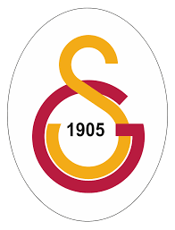
 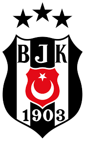
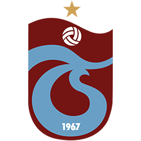
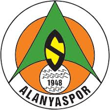
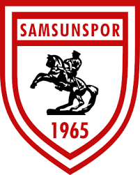
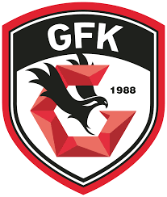
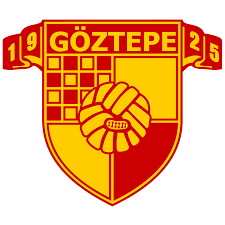
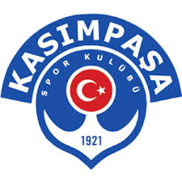
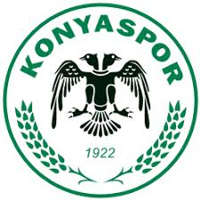
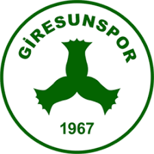
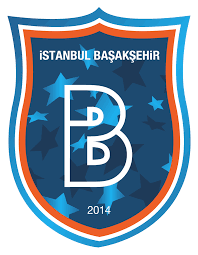
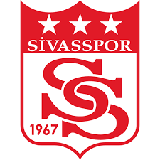
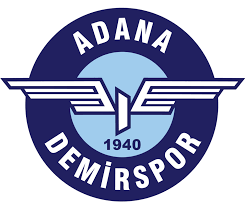
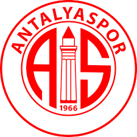
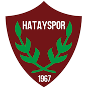
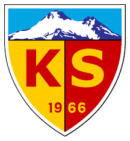
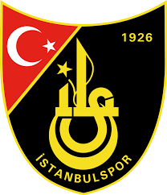
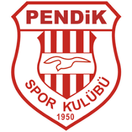
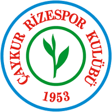
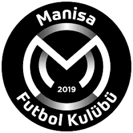
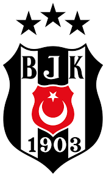
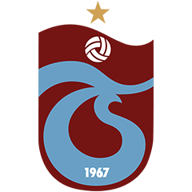
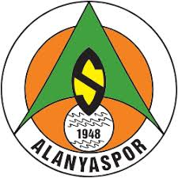
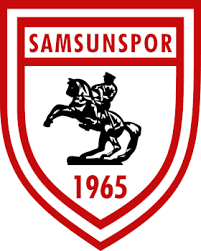
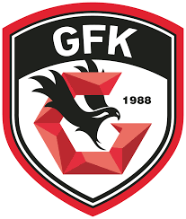
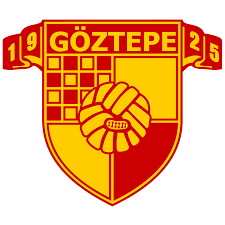
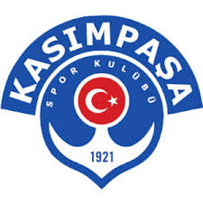
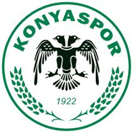
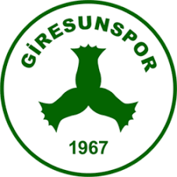
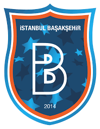
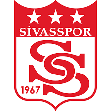
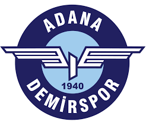
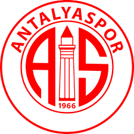
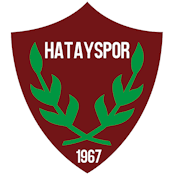
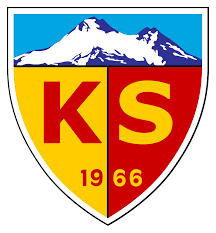
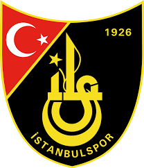
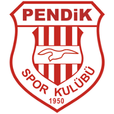
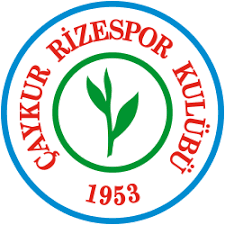
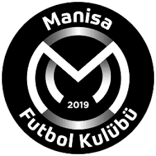
Super Liqa (türk. Süper Lig) — Türkiyənin ən üst səviyyə futbol liqası. Bir mövsümdə 19 futbol klubunun yer aldığı liqada, hər komanda bir-birilə 2 dəfə olmaqla mübarizə aparır və qaliblər dairəvi sistem vasitəsilə seçilir. Mövsümü 1-ci və 2-ci yerdə tamamlayan klublar UEFA Çempionlar Liqasında, 3-cü, 4-cü yerdə tamamlayan və Türkiyə Kubokunu qazanan klublar isə UEFA Kubokunda çıxış etmə şansı qazanır. 9 ay davam edən Super Liqa, avqust və may ayları da daxil olmaqla 34 həftə və 306 matç davam edir. 2015–16 mövsümünün sona çatması ilə liqa UEFA ölkələri sıralamasında 11-ci yerdə qərarlaşmışdır.
1959-cu ildə İstanbul, Ankara və İzmir regional liqalarından cəmi 16 komandanın iştirakı ilə təşkil edilmişdir. Türkiyə 1. Futbol Liqası 1962–63 mövsümündə, 2001–02 mövsüm başında istifadə ediləcək olan Super Liqanın adı, bu dövrdə sponsor adı əlavə edildikdən sonra liqanın başında müxtəlif sponsorların dəstəyi səbəbiylə istifadə edildi. Zamanla iştirakçıların sayı və format baxımından müxtəlif dəyişikliklərə məruz qaldı.
İndiyədək 68 komandanın yarışdığı Türkiyə Super Liqasında beş komanda çempion olmağı bacarıb. Qalatasaray (23) ən çox çempion olan komandadır və sarı-qırmızılıları sırasıyla Fənərbaxça (19), Beşiktaş (16), Trabzonspor (7), Bursaspor (1) və İstanbul Başakşehir (1) izləyir.[1]
Türkiyə futbol çempionlarının siyahısı
Çempionlar
Türkiyə Futbol Çempionatı (1924–1951)
(TFF tərəfindən sayılmır)
İl Çempion[1][2] 2-ci yer
1924 Harbiyə (1) Bahriyə
1925
keçirilməyib
1926
1927 Muhafızgücü (1) Altınordu
1928
keçirilməyib
1929
1930
1931
1932 İstanbulspor (1) Altınordu
1933 Fənərbaxça (1) İzmirspor
1934 Beşiktaş (1) Altay
1935 Fənərbaxça (2) Altınordu
1936
keçirilməyib
1937
1938
1939
1940 Eskişehir Demirspor (1) Fənərbaxça
1941 Gənclərbirliyi (1) Beşiktaş
1942 Harp Okulu (2) Göztəpə
1943
keçirilməyib
1944 Fənərbaxça (6) Harp Okulu
1945 Harp Okulu (3) İzmit Harp Filosu
1946 Gənclərbirliyi (2) Beşiktaş
1947 Ankara Demirspor (1) Fənərbaxça
1948
keçirilməyib
1949 Ankaragücü (1) Qalatasaray
1950 Göztəpə (1) Gənclərbirliyi
1951 Beşiktaş (5) Altay
Millî Kümə (1937–1950)
(TFF tərəfindən sayılmır)
İl Çempion[1][3] 2-ci yer
1937 Fənərbaxça (3) Qalatasaray
1938 Günəş (1) Beşiktaş
1939 Qalatasaray (1) Ankara Demirspor
1940 Fənərbaxça (4) Qalatasaray
1941 Beşiktaş (2) Qalatasaray
1942
keçirilməyib
1943 Fənərbaxça (5) Qalatasaray
1944 Beşiktaş (3) Fənərbaxça
1945 Fənərbaxça (7) Beşiktaş
1946 Fənərbaxça (8) Beşiktaş
1947 Beşiktaş (4) Fənərbaxça
1948
Not held due to the 1948 Summer Olympics in London.
1949
Not held due to the South Mediterranean Cup.
1950 Fənərbaxça (9) Qalatasaray
Federasiya Kuboku (1956–1958)
İl Çempion[4] 2-ci yer 3-cü yer
1956–57 Beşiktaş (6) Qalatasaray Altay
1957–58 Beşiktaş (7) Qalatasaray
Super Liqa (1959'dan beri)
Mövsüm Çempion 2-ci yer 3-cü yer Bombardir Komanda
1959 Fənərbaxça Qalatasaray
1999/2000 Qalatasaray (14)
2000/2001
2001/2002 Qalatasaray (15)
2002/2003
2003/2004
2004/2005
2005/2006 Qalatasaray (16)
2006/2007
2007/2008 Qalatasaray (17)
2008/2009
2009/2010 Bursaspor (1)
2010/2011
2011/2012 Qalatasaray (18)
2012/2013 Qalatasaray (19)
2013/2014
2014/2015 Qalatasaray (20)
2015/2016
2016/2017
Çempionluq sayıları
Komanda Çempionluq[1] İkinciliq Çempionluq illeri İkinciliq illeri
Fənərbaxça 28 27 1933, 1935, 1937, 1940, 1943, 1944, 1945, 1946, 1950, 1959, 1960–61, 1963–64, 1964–65, 1967–68, 1969–70, 1973–74, 1974–75, 1977–78, 1982–83, 1984–85, 1988–89, 1995–96, 2000–01, 2003–04, 2004–05, 2006–07, 2010–11, 2013–14 1940, 1944, 1947, 1947, 1959–60, 1961–62, 1966–67, 1970–71, 1972–73, 1975–76, 1976–77, 1979–80, 1983–84, 1989–90, 1991–92, 1993–94, 1997–98, 2001–02, 2005–06, 2007–08, 2009–10, 2011–12, 2012–13, 2014–15, 2015–16, 2017-18, 2021-22
Qalatasaray 23 19 1939, 1961–62, 1962–63, 1968–69, 1970–71, 1971–72, 1972–73, 1986–87, 1987–88, 1992–93, 1993–94, 1996–97, 1997–98, 1998–99, 1999–00, 2001–02, 2005–06, 2007–08, 2011–12, 2012–13, 2014–15, 2017-18, 2018-19 1937, 1940, 1941, 1943, 1949, 1950, 1956–57, 1957–58, 1959, 1960–61, 1965–66, 1974–75, 1978–79, 1985–86, 1990–91, 2000–01, 2002–03, 2013–14, 2020-21
Beşiktaş 21 19 1934, 1941, 1944, 1947, 1951, 1956–57, 1957–58, 1959–60, 1965–66, 1966–67, 1981–82, 1985–86, 1989–90, 1990–91, 1991–92, 1994–95, 2002–03, 2008–09, 2015–16, 2016–17, 2020-21 1938, 1941, 1945, 1946, 1946, 1962–63, 1963–64, 1964–65, 1967–68, 1973–74, 1984–85, 1986–87, 1987–88, 1988–89, 1992–93, 1996–97, 1998–99, 1999–00, 2006–07
Trabzonspor 7 9 1975–76, 1976–77, 1978–79, 1979–80, 1980–81, 1983–84, 2021-22 1977–78, 1981–82, 1982–83, 1994–95, 1995–96, 2003–04, 2004–05, 2010–11, 2019-20
Harp Okulu 3 1 1924, 1942, 1945 1944
Gənclərbirliyi 2 1 1941, 1946 1951
Ankara Demirspor 1 1 1947 1939
Göztəpə 1 1 1950 1942
Muhafızgücü 1 — 1927
İstanbulspor 1 — 1932
Günəş 1 — 1938
Eskişehir Demirspor 1 — 1940
MKE Ankaragücü 1 — 1949
Bursaspor 1 — 2009–10
İstanbul Başakşehir 1 2 2019-20 2016-17, 2018-19
Super Liqa (1957-ci ildən bəri)
Komanda Çempionluq Mövsümlər
Qalatasaray
22
Fənərbaxça
19
Beşiktaş
16
Trabzonspor
7
Bursaspor 1
İstinadlar
"Turkey - List of Champions". RSSSF. 2018-04-27 tarixində arxivləşdirilib. İstifadə tarixi: 22 Avril 2018.
"Türkiye Futbol Birinciliği". Erdinç Sivritepe. 20 yanvar 2018 tarixində arxivləşdirilib. İstifadə tarixi: 26 oktyabr 2017.
"Milli Küme". Erdinç Sivritepe. 5 iyul 2018 tarixində arxivləşdirilib. İstifadə tarixi: 26 oktyabr 2017.
"Super Liqa arxivi". 22 noyabr 2015 tarixində arxivləşdirilib. İstifadə tarixi: 2 yanvar 2018.